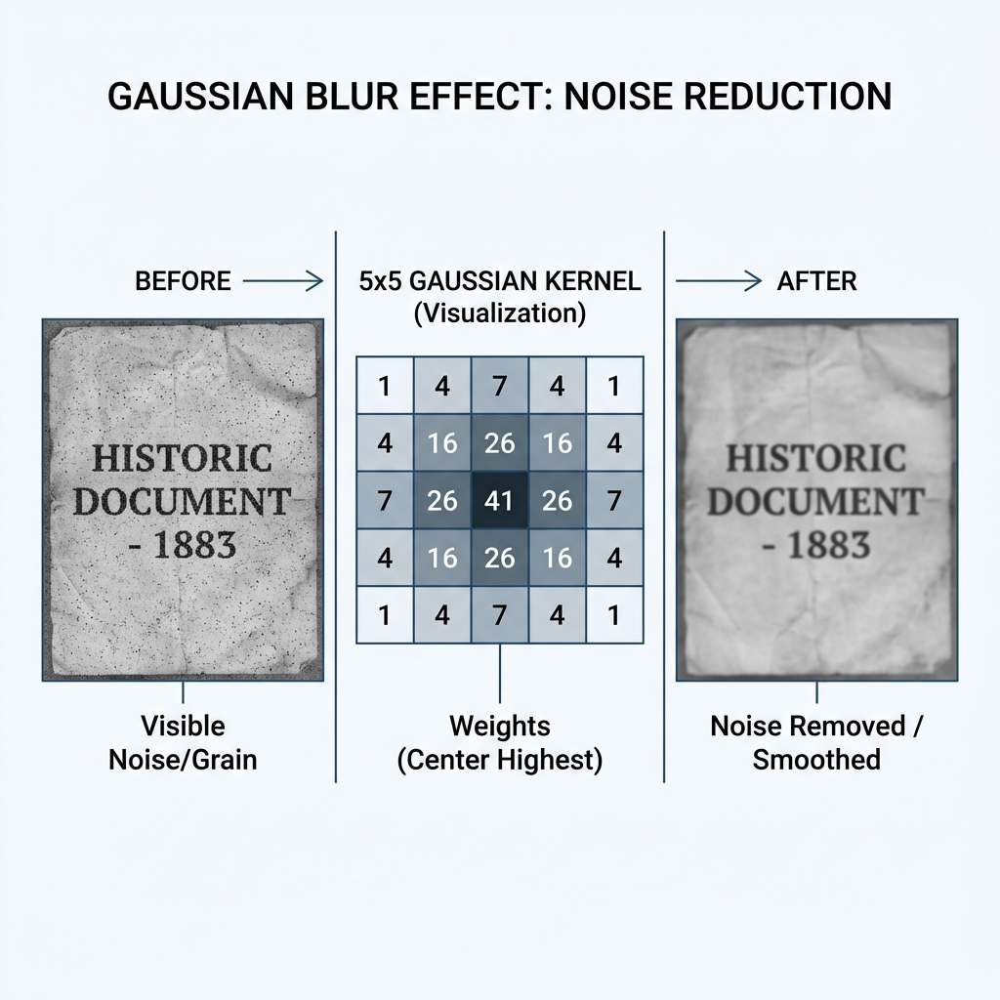
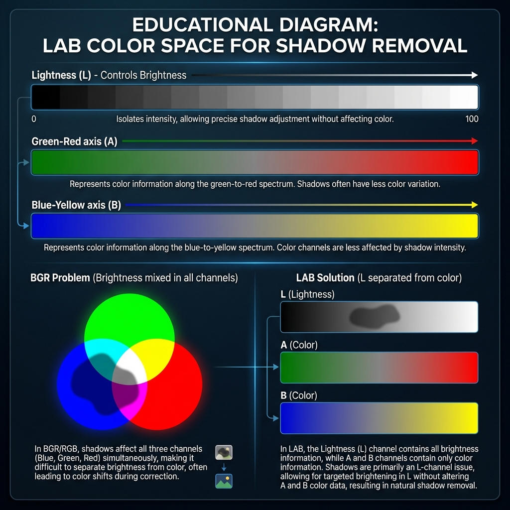
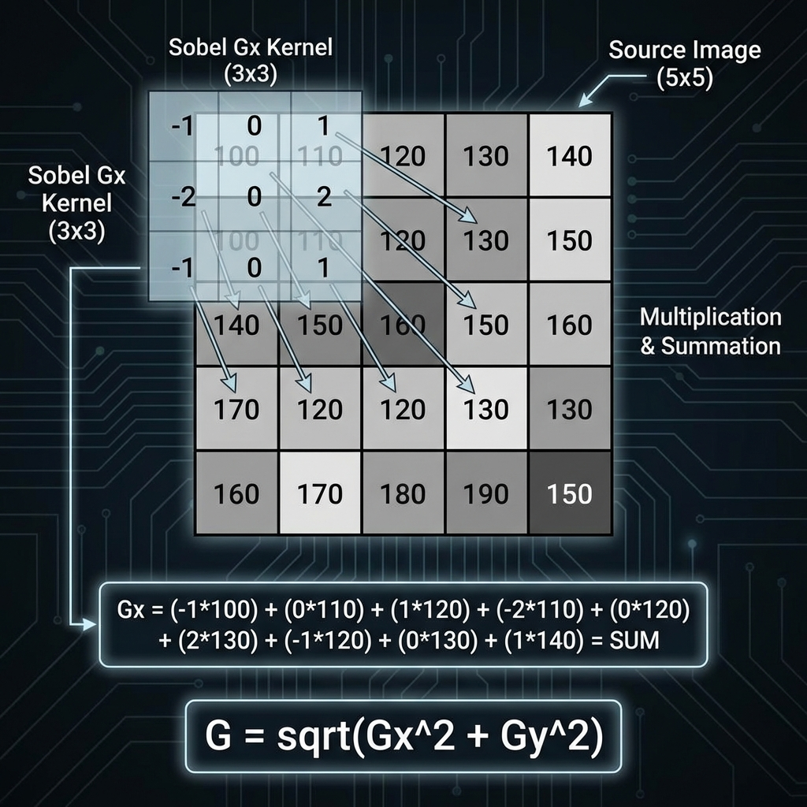
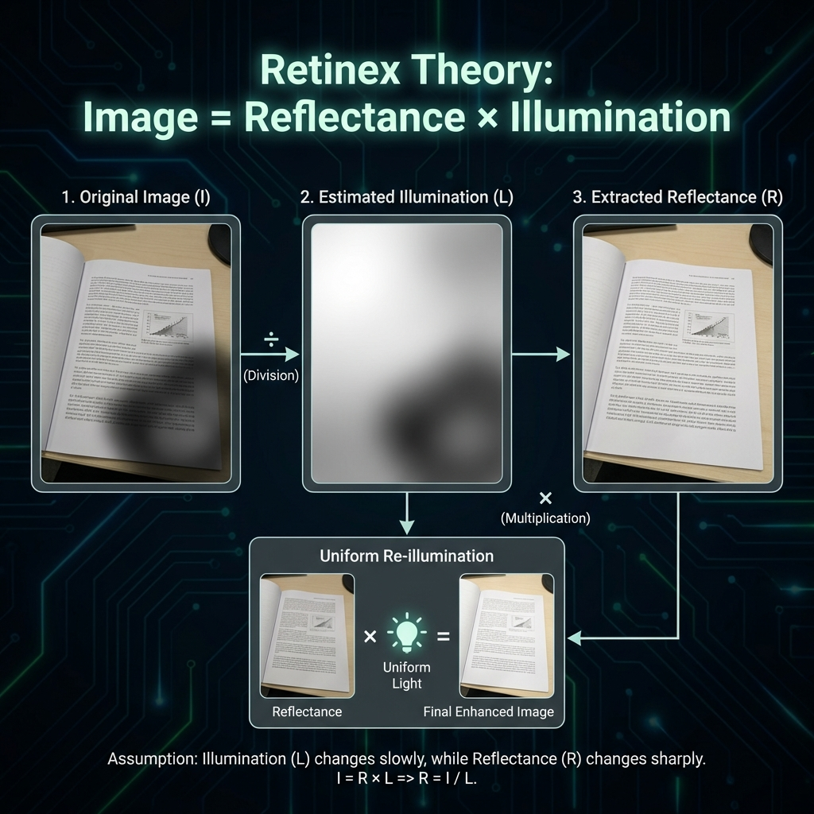
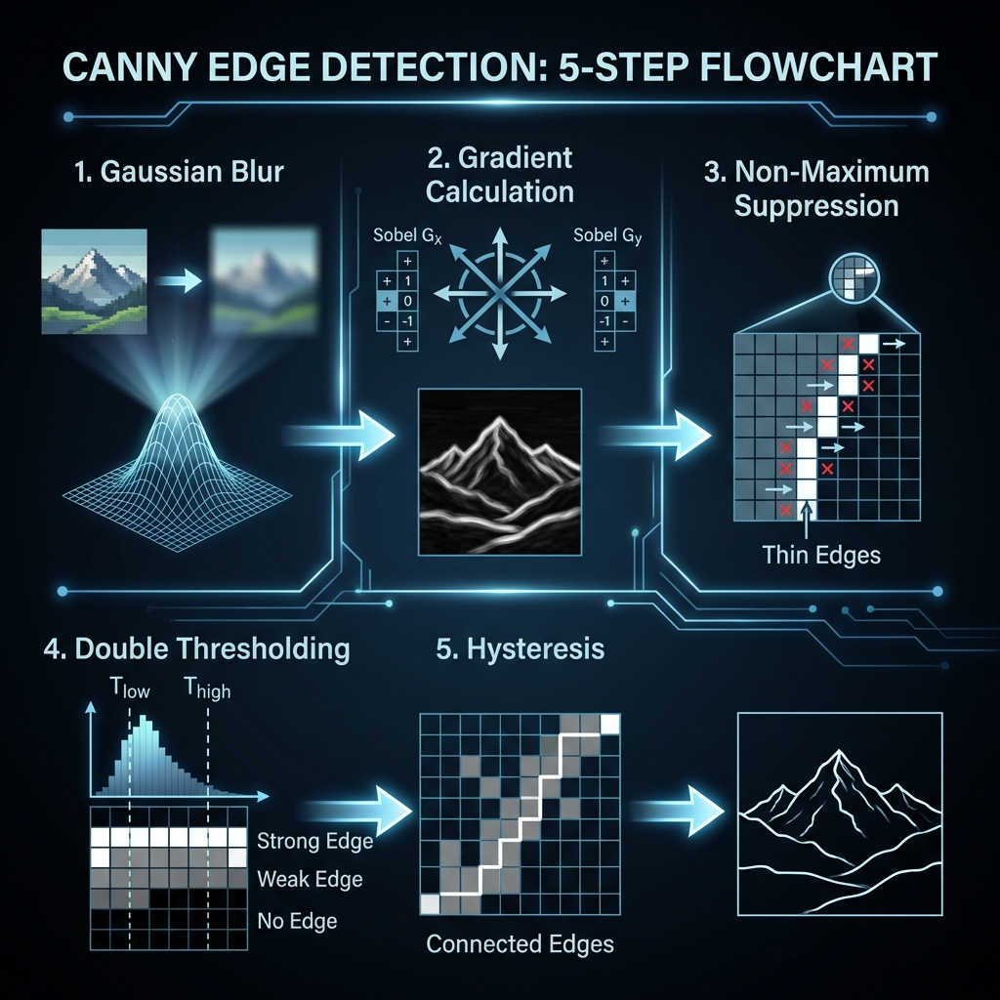
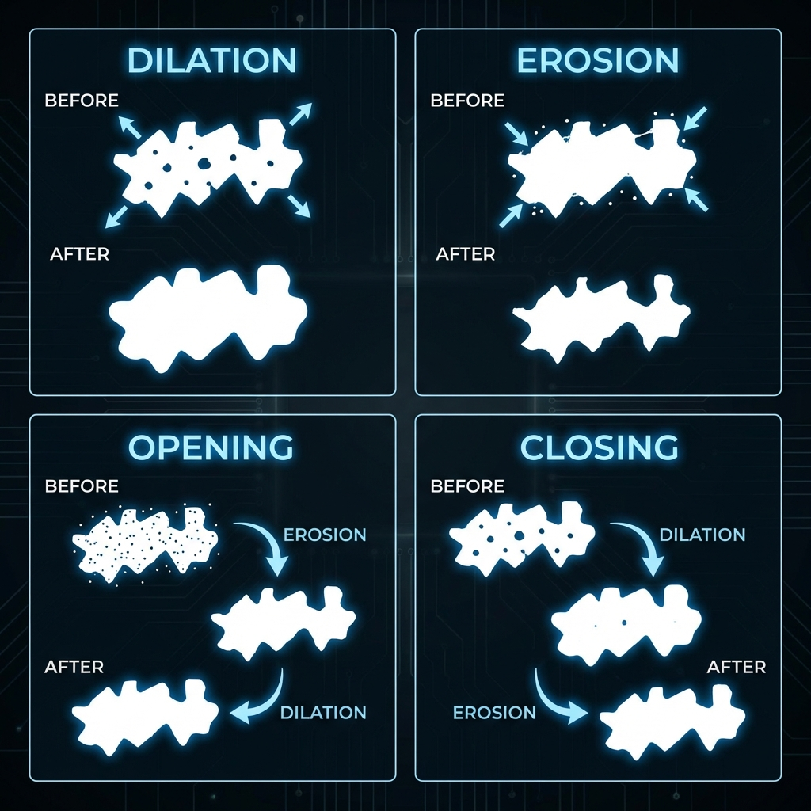
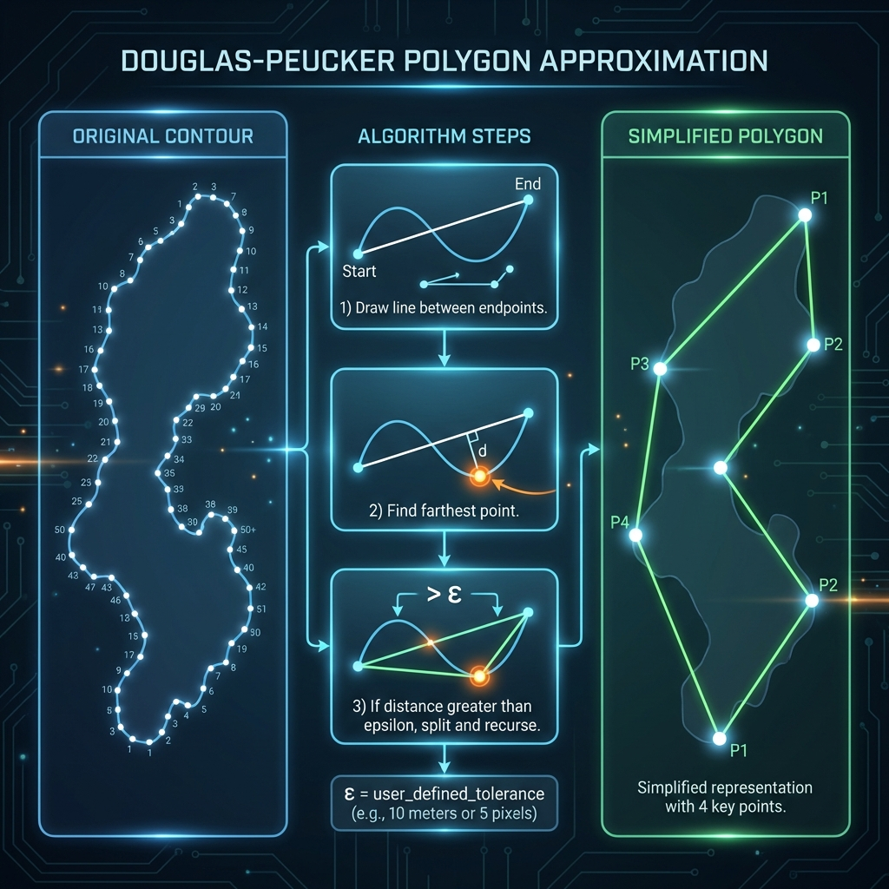
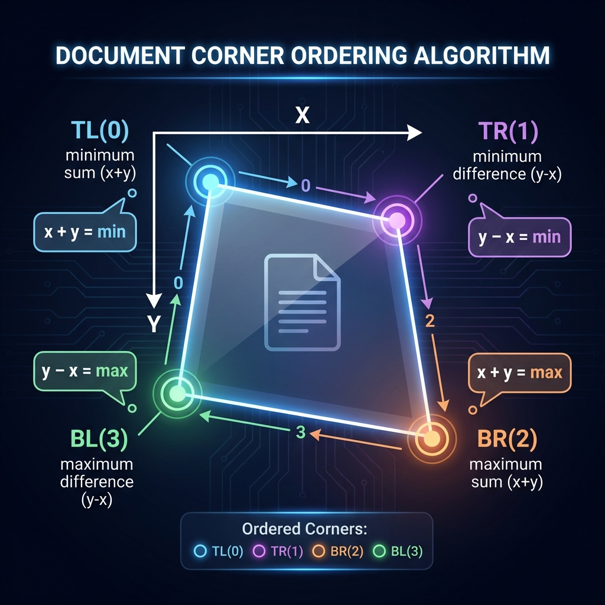
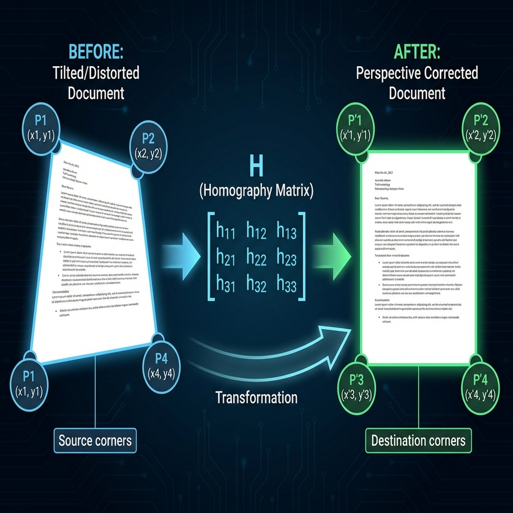

Every computer vision technique explained in detail with visualizations
Preparing the image for analysis
What it does: Smooths the image by averaging each pixel with its neighbors using a weighted average. Closer pixels get more weight.

Before and after Gaussian blur with the 5×5 kernel weights shown
For each pixel, we place a kernel (e.g., 5×5) centered on it. Each neighbor is multiplied by its kernel weight, summed, and divided by total weight. The center pixel gets highest weight (41), edges get lowest (1).
What it does: A smarter blur that smooths textures while preserving edges.
Regular Gaussian blur makes edges blurry too. If there's text near noise, Gaussian blurs both.
It considers TWO things:
Gradient-Domain Processing in LAB Color Space
In BGR/RGB, brightness is mixed into ALL three channels. You can't tell if a pixel is dark because of a shadow or because it's actually a dark color.

LAB separates brightness (L) from color (A, B) - perfect for shadow removal
| Channel | What It Contains | Range |
|---|---|---|
| L | ONLY Lightness/Brightness | 0 (black) to 100 (white) |
| A | ONLY Green↔Red color | -128 to +127 |
| B | ONLY Blue↔Yellow color | -128 to +127 |
What it does: Computes the rate of change of pixel intensity. High gradient = edge or shadow boundary.

How Sobel convolution works: kernel × pixels → sum → gradient value
Gx (Horizontal)
Detects vertical edges │
Gy (Vertical)
Detects horizontal edges ─
The key insight: An image is the product of Reflectance (what we want) and Illumination (shadows - what we want to remove).

Image = Reflectance × Illumination → Divide out illumination to remove shadows
Contrast Limited Adaptive Histogram Equalization - Enhances contrast locally without over-amplifying noise.
Finding document boundaries
Produces thin, well-connected edge lines through a 5-step process.

The 5 steps of Canny edge detection
| Step | Operation | Purpose |
|---|---|---|
| 1 | Gaussian Blur | Reduce noise that could cause false edges |
| 2 | Gradient Calculation | Sobel Gx, Gy → magnitude & direction |
| 3 | Non-Maximum Suppression | Thin edges to 1 pixel width |
| 4 | Double Thresholding | Classify as strong/weak/non-edge |
| 5 | Hysteresis | Keep weak edges connected to strong ones |
What it does: Converts grayscale to binary, calculating threshold locally for each region.
Documents have uneven lighting. A threshold that works for one corner may fail in another.
Cleaning up the edge detection results

Dilation, Erosion, Opening, and Closing operations on binary images
Output = MAX of neighborhood
Output = MIN of neighborhood
Removes small bright spots while preserving larger shapes.
Fills small holes and connects broken edges.
From edges to document boundaries
What it does: Simplifies a contour with hundreds of points to a polygon with just 4 corners.

From 50+ contour points to just 4 corner vertices
Ensures corners are in consistent order: Top-Left → Top-Right → Bottom-Right → Bottom-Left

Using sum and difference to identify each corner
| Corner | Position | Rule |
|---|---|---|
| Top-Left (0) | Small x, small y | Minimum sum (x+y) |
| Top-Right (1) | Large x, small y | Minimum difference (y-x) |
| Bottom-Right (2) | Large x, large y | Maximum sum (x+y) |
| Bottom-Left (3) | Small x, large y | Maximum difference (y-x) |
The mathematical heart of document scanning
A homography is a transformation that maps points from one plane to another. It "reverses" the perspective distortion caused by taking a photo at an angle.

From distorted trapezoid to perfect rectangle using the 3×3 homography matrix
A 3×3 matrix with 8 degrees of freedom that defines the complete transformation.
3×3 Homography Matrix H
Computes H from 4 point correspondences. Each point gives 2 equations → 8 equations for 8 unknowns.